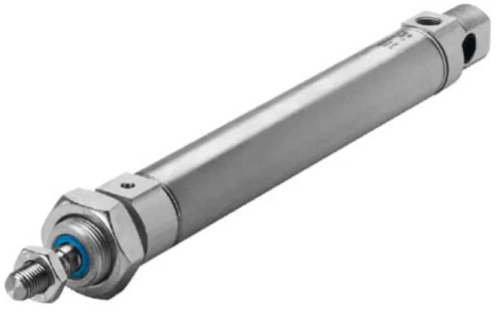

Section 1: What are Pneumatics?
Pneumatics is the use of pressurised air to do mechanical work. A compressor draws in air from the atmosphere and compresses it to a higher pressure. This compressed air is stored and then controlled to produce linear or rotary movement. Pneumatic systems are found all around us — in factory automation, bus door mechanisms, dental drills, road drills, and vehicle braking systems.

Advantages of pneumatic systems
Pneumatic systems offer several advantages over hydraulic or electrical systems: compressed air is non-flammable and safe to use in hazardous environments; the components are relatively low-cost; speed is easy to adjust using flow control valves; and any leaks result only in air escaping rather than fluid spillage.
Disadvantages
Air is compressible, so precise positioning can be difficult. Pneumatic systems can be noisy, and energy is lost as heat when air is compressed. A compressor and air supply are always required.
1a. Give three examples of pneumatic systems you might encounter in everyday life. For each one, describe what work the compressed air is doing.
1b. Explain one advantage and one disadvantage of using a pneumatic system compared to an electric motor for a door-opening mechanism.
Section 2: Pneumatic Components — Seeing it Work First
Rather than starting with a wall of symbols to memorise, let's watch a real circuit working first. Seeing the simulation below will give you a feel for what's going on — the air flowing, the valve switching, the cylinder moving — before we break down exactly why it behaves that way and what each part is called.
Now let's look at what you just saw, piece by piece.
Main air supply and exhaust
Every pneumatic circuit needs a main air supply — the pressurised air from the compressor, drawn into port 1 of a valve. That's the air you saw flowing in to push the cylinder out. Exhaust is where used air vents to atmosphere after passing through the circuit, shown in diagrams as an open triangle — that's the air you saw venting away when the cylinder instroked.


The 3/2 valve
The valve you just operated is a push-button, spring-return 3/2 valve — it has 3 ports and 2 states.
We have to be specific about the full name, because a 3/2 valve can be switched from its normal state to its actuated state in several different ways. The number of ports and states tells you what the valve does; the actuator tells you how it gets triggered. The same 3/2 valve could instead be built as a roller 3/2 valve, a lever 3/2 valve, a pilot 3/2 valve, and so on — the switching behaviour is identical, but what causes the switch is different.
Here are the actuators you'll meet across these notes:


Here's what's actually happening inside a push-button, spring-return 3/2 valve as you press and release the button:
Single acting cylinder (SAC)
The cylinder in the simulation is a single acting cylinder (SAC). Main air causes the outstroke (extension of the piston rod); a spring returns it when the pressure is released. SACs are used where force is only needed in one direction.

2a. Use the No Pressure simulator or physical components to build the SAC circuit. Operate the push-button valve and describe what happens. In your answer, describe the state of the valve and what the cylinder does when the button is pressed and when it is released.
2b. Describe what happens to the ports of a 3/2 valve when it switches from its normal state to its actuated state. What determines the maximum force the cylinder can produce?
2c. ✏️ Draw the full circuit diagram for the SAC circuit: a 3/2 push-button valve (normal position) connected to a single acting cylinder, with main air and exhaust labelled. Draw by hand and paste a photo of your drawing here.
Section 3: Double Acting Cylinder Circuit
A double acting cylinder (DAC) needs main air directed to either side of the piston, controlled by a 5/2 directional control valve. Try both directions in the simulator before reading how it works.
Unlike the single acting cylinder you met in Section 2, main air here drives both the outstroke and the instroke.


A 5/2 valve has five ports and two states. In one state, port 1 (main air) connects to port 2 (outstroke side) while port 4 (instroke side) exhausts through port 5. Switching the valve reverses this: port 1 now connects to port 4, while port 2 exhausts through port 3. Changing the state of the valve therefore reverses the direction of the cylinder.
3a. Use the No Pressure simulator or physical components to build the DAC circuit. Operate the 5/2 valve in both directions. Describe what you observe and explain how the DAC differs from the SAC circuit you built in Task 2.
3b. A DAC circuit has its 5/2 valve in the normal state. Describe what the cylinder is doing. Explain what happens to the cylinder when the valve changes to its actuated state.
3c. ✏️ Draw the full circuit diagram for the DAC circuit: a 5/2 push-button valve connected to a double acting cylinder, with the ports numbered. Draw by hand and paste a photo of your drawing here.
Section 4: T-Piece — Splitting the Air Supply
A T-piece connector lets one main air supply feed two or more branches of a circuit at once. See it in action below.
Both branches receive the same supply pressure. T-pieces are used when a single air source needs to power multiple cylinders or valves at the same time.
4a. Use the simulator or physical components to build a circuit using a T-piece to operate two cylinders from the same main air supply. Describe what you observe. What happens to each cylinder when the valve is operated?
4b. Give one example of a practical application where a T-piece would be useful in a pneumatic circuit.
4c. ✏️ Draw a circuit diagram showing one push-button valve, a T-piece, and two single acting cylinders both fed from the T-piece. Draw by hand and paste a photo of your drawing here.
Section 5: Shuttle Valve
A shuttle valve lets a cylinder be operated from two separate control valves. Try both push-buttons in the simulator below.
Inside the shuttle valve is a small ball. When main air enters from one inlet, it pushes the ball across to seal the other inlet and passes through to the outlet. If main air enters the other inlet instead, the ball moves the other way and the same thing happens. If main air enters both inlets at the same time, the ball stays where it is and main air still passes through to the outlet.
5a. Explain how a shuttle valve works. What happens inside the valve when main air enters from one inlet? What happens if main air enters from both inlets at the same time?
5b. A press in a workshop can be dangerous to operate with one hand. Describe how a shuttle valve could be used as part of a two-handed safety circuit.
5c. ✏️ Draw the circuit symbol for a shuttle valve, clearly showing its two inlets and single outlet. Draw by hand and paste a photo of your drawing here.
Section 6: Air Bleed (Diaphragm) Circuit
An air bleed circuit works differently from every circuit so far — instead of pressing a valve to supply air, it works by blocking a small continuous flow of air. Try it in the simulator before reading the detail.
How it works
The circuit uses a diaphragm-actuated 3/2 valve. In the normal state, main air constantly bleeds to atmosphere through a small hole in the circuit (the bleed point). Because this air is always escaping, there is never enough pressure to act on the diaphragm — the valve stays in its normal state and the cylinder remains instroked.
When an object or a finger covers the bleed hole, the escaping air is blocked. Pressure immediately builds up behind the diaphragm. Once it reaches the switching threshold, the diaphragm switches the 3/2 valve, main air flows to the cylinder, and the cylinder outstrokes.
As soon as the obstruction is removed, air bleeds away again, pressure drops, the diaphragm releases, and the valve spring returns it to its normal state — causing the cylinder to instroke.

6a. Explain how an air bleed circuit works. In your answer, describe what happens at the bleed point when it is open, and what happens when it is blocked.
6b. Describe one practical application of an air bleed circuit. Explain what causes the bleed to be blocked in your example and what action this triggers.
6c. State one key difference between an air bleed circuit and a standard push-button SAC circuit.
6d. ✏️ Without looking back at the diagram above, draw the full air bleed circuit from memory: the diaphragm-actuated 3/2 valve, the bleed point, main air, exhaust, and the single acting cylinder. Draw by hand and paste a photo of your drawing here — then check it against the diagram above.
Section 7: Speed Control — Restrictors
The speed of a pneumatic cylinder can be controlled by limiting the flow rate of air using a uni-directional restrictor (UDR). Try adjusting the restrictors in the simulator before reading the theory.
Meter-in: The restrictor is placed on the main air supply side. It limits the main air flowing into the cylinder, slowing the stroke.
Meter-out: The restrictor is placed on the exhaust side. It limits the air flowing out to exhaust. This gives smoother speed control and is preferred because the back-pressure helps support the load.
7a. Use the simulator or physical components to build a circuit with a UDR. Adjust the restrictor and observe how the cylinder speed changes. Explain the difference between meter-in and meter-out speed control. Which method should always be used in pneumatics and why?
7b. A packaging machine uses a SAC to push items along a conveyor. The operator wants the outstroke to be slow but the instroke to be quick. Explain where a uni-directional restrictor (UDR) should be placed and how it should be oriented to achieve this.
7c. ✏️ Draw a SAC circuit with a uni-directional restrictor correctly positioned and oriented for meter-out speed control on the exhaust. Label the direction of free flow and restricted flow. Draw by hand and paste a photo of your drawing here.
Section 8: Semi-Automatic Circuit
A semi-automatic circuit needs a manual input to start each cycle, but part of the operation happens automatically. Press start in the simulator and watch the full cycle before reading how it works.
A typical arrangement uses a DAC, a 5/2 valve with pilot actuators, and a roller spring-return valve triggered by the cylinder rod at the end of its outstroke. The operator presses a start button which sends a pilot signal (main air pressure) to change the state of the 5/2 valve. Main air causes the DAC to outstroke. At the end of the outstroke the rod actuates the roller spring-return valve, which sends a pilot signal to return the 5/2 valve to its normal state. Main air now drives the instroke while the outstroke side exhausts. The circuit then waits for the next button press.
8a. Describe the complete operating cycle of a semi-automatic pneumatic circuit. Include reference to: the pilot signal, how main air causes the outstroke, what triggers the instroke, and what happens at the end of the cycle.
8b. Explain the difference between a manual circuit and a semi-automatic circuit. Give one advantage of using a semi-automatic circuit in a production environment.
8c. ✏️ Draw the full semi-automatic circuit diagram: a push-button start valve, a pilot-actuated 5/2 valve, a DAC, and a roller-actuated spring-return valve positioned to be tripped at the end of the outstroke. Draw by hand and paste a photo of your drawing here.
Section 9: Fully Automatic Circuit
A fully automatic circuit repeats its cycle continuously without any manual input after the initial start signal. Press start in the simulator and watch it run.
A second limit valve at the instroked position sends a pilot signal to trigger the next outstroke automatically, so the cylinder cycles back and forth until the main air supply is cut off.
9a. Explain the role of each limit valve in a fully automatic circuit. What would happen if the limit valve at the retracted position were removed?
9b. A fully automatic circuit is used in a bottling plant to cap bottles on a conveyor. Describe how the circuit could be modified to allow an operator to stop the machine safely at the end of a cycle (not mid-stroke).
9c. ✏️ Draw the full fully automatic circuit diagram, including both limit valves in their correct positions at each end of the cylinder's stroke. Draw by hand and paste a photo of your drawing here.
Section 10: Time Delay Circuit
A time delay valve introduces a controllable delay between an input signal and an output action. Operate the input in the simulator and watch the delay before reading how it's produced.
The circuit consists of a uni-directional restrictor feeding a reservoir, which builds up main air pressure slowly until it is high enough to pilot (switch) a 3/2 output valve. By adjusting the restrictor, the fill time of the reservoir — and therefore the length of the delay — can be changed. Increasing the size of the reservoir will also increase the delay time, as more volume must be filled before the pilot threshold is reached. When the input signal is removed, the reservoir vents quickly back through the UDR and the timer resets immediately.
10a. Describe how a pneumatic time delay circuit produces a time delay. Include reference to the restrictor, reservoir, and pilot-operated output valve.
10b. A time delay circuit is set to delay for 3 seconds. An engineer wants to increase the delay to 8 seconds. Explain two ways this could be achieved.
10c. Use the simulator or physical components to build a time delay circuit. Adjust the UDR to make the delay longer and shorter. Describe what you observe and explain why adjusting the restrictor changes the delay time.
10d. Describe one practical application of a time delay circuit in an industrial or domestic context. Explain what the delay achieves in your chosen example.
10e. ✏️ Draw the full time delay circuit diagram: input valve, uni-directional restrictor, reservoir, and pilot-actuated 3/2 output valve. Draw by hand and paste a photo of your drawing here.
Section 11: Electrical Control of Pneumatics
Every circuit so far has been switched by hand, by a pilot air signal, or automatically by another part of the pneumatic circuit. A pneumatic valve can also be switched electrically, using a solenoid actuator — a coil that, when energised, moves the valve's spool. This is how pneumatic systems are controlled by microcontrollers, PLCs and other electronic systems.
A solenoid-actuated valve is connected to an electrical control system (such as a microcontroller or PLC). When the control system sends an electrical signal to the solenoid, it switches the valve and main air flows to the cylinder. When the electrical signal is removed, the spring returns the valve to its normal state and the cylinder instrokes. This allows a pneumatic circuit to be controlled entirely by software or by electronic sensors such as light gates or pressure switches.

11a. Explain the difference between a pilot actuator and a solenoid actuator on a valve. In which type of circuit would each be used?
11b. Give one example of a sensor that could be used to trigger a solenoid valve electrically, and describe the pneumatic action it would cause.
11c. ✏️ Draw the full solenoid circuit diagram: a solenoid-actuated 3/2 valve connected to a single acting cylinder, labelling the electrical signal, main air and exhaust. Draw by hand and paste a photo of your drawing here.
Section 12: Calculating Cylinder Force
The force a pneumatic cylinder can produce depends on two things: the air pressure in the circuit, and the area of the piston that the pressure is acting on.
You can rearrange this formula to find any of the three quantities. The FPA triangle is a useful memory aid:
Cover the quantity you want to find — the other two show how to calculate it.
Piston area and rod area
A single acting cylinder only has main air pushing on one side of the piston (the outstroke). The full circular face of the piston is available to push against, so the effective area is simply the piston area: A = π × D² / 4, where D is the piston diameter.
A double acting cylinder has main air pushing on both sides of the piston, one side at a time. On the outstroke, the full piston area is available — exactly like a SAC. On the instroke, main air acts on the other side of the piston, but the piston rod takes up part of that face, so the effective area is the piston area minus the rod area.
Worked Example — outstroking and instroking force

The cylinder above has a piston diameter of 70 mm and a piston rod diameter of 10 mm. It is supplied at 5 bar (500,000 Pa). Calculate the outstroking force and the instroking force.
12a. A SAC has a piston diameter of 20 mm and is supplied at 4 bar. Calculate the outstroke force in newtons. Show your working, converting units before you calculate.
12b. A DAC has a piston diameter of 40 mm and a piston rod diameter of 12 mm, supplied at 6 bar. Calculate (i) the outstroking force and (ii) the instroking force. Show your working for both, including the piston area and the rod area.
12c. Explain, in terms of piston area and rod area, why a DAC's instroking force is always lower than its outstroking force at the same supply pressure.
12d. ✏️ Draw two labelled cross-section diagrams of a DAC piston: one showing the full piston area used on the outstroke, and one showing the smaller area (piston area minus rod area) used on the instroke, with the rod diameter marked. Draw by hand and paste a photo of your drawing here.